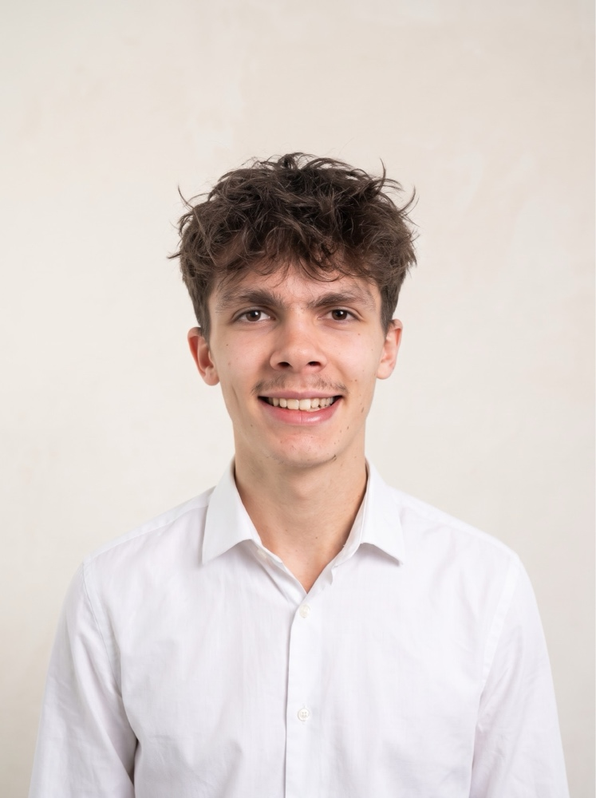

SOUAN Victor
SOUAN Victor
SOUAN Victor
SOUAN Victor
First-year Undergraduate Student in Electrical Engineering & Industrial Computing (BUT GEII) — IUT de Bordeaux (France)

Holding a French General Baccalaureate with honors (Mathematics & Physics-Chemistry), I am currently studying Electrical Engineering and Industrial Computing (BUT GEII) at IUT de Bordeaux. Passionate about electronics, power systems, and hands-on engineering, I aim to specialize in Electrical Power & Energy Management (EME) in my second year to pursue a career in energy project management.
In a four-student engineering team, we designed, simulated, and routed a standalone electronic bath thermometer powered by a 2S LiPo battery (24-hour autonomy, BOM cost under €20).
Functional breakdown of specifications, component sizing, Proteus ISIS schematic capture, ARES PCB routing, and engineering documentation (DDC/DDF).
Drafting test procedures, running ISIS electrical simulations across operating thresholds, oscilloscope measurements, and prototype debugging.
Team coordination, bilingual technical reporting (French & English), bill of materials budget control (< €20), and eco-design choices.
2026 – Present: First-year BUT GEII at IUT de Bordeaux (Gradignan) — aiming for the Energy & Power Management (EME) track.
Summers 2025 & 2026: Seasonal agricultural machinery & tractor driver during grape harvests in Gironde (autonomous logistics, safety compliance, preventive maintenance).
Tools & Software: Proteus ISIS/ARES, Inkscape, VS Code, HTML/CSS/JavaScript, GitHub, C/Arduino IDE, Oscilloscope & Lab Instrumentation.